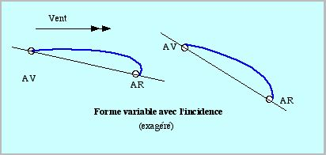
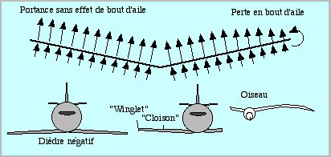

L'Aérodynamique
Ce sujet fait souvent couler beaucoup d'encre ou de salive sur des idées préconçues et plus ou moins exactes. En général, il n'y a guère à se préoccuper de l'aérodynamique : si votre CV est assez léger pour le vent, il vole. Sinon il ne vole point. Point.
Personne ne sait calculer la portance ou la traînée d'un CV :
Les profils utilisés pour les avions ne sont pas optimaux pour les CVs [dont le nombre de Reynolds est beaucoup plus faible. Un profil sans épaisseur peut même être meilleur pour eux qu'un profil épais ce qui est plutôt chanceux pour nous !]. De toutes façons de tels profils sont très difficiles à réaliser en toile sur armature, les petites approximations ayant de grandes conséquences sur les écoulements. De plus les CVs volent le plus souvent à des angles d'incidence où les avions auraient "décroché". Mais la longueur importante des CVs fait que leur décrochage est très progressif et qu'ils peuvent voler (et le font) encore plus loin. D'autre part les CVs se déforment, et plus ou moins selon le vent et selon l'angle d'incidence.

Alors étudiez les "théories" pour votre culture mais ne perdez pas de temps avec une recherche aérodynamique sophistiquée pour construire vos CVs.
On peut juste donner quelques "influences", sans données mesurables :
• Si le CV est plat et fin, il aura pour la même portance une traînée plus faible, résultant en un angle de ligne plus fort ou la possibilité de voler avec un vent plus faible.
• Le dièdre est plus ou moins néfaste. S'il est faible, il ne change guère la portance. S'il devient plus fort, on observe qu'il faut nettement plus de vent pour voler. Bien sûr, la surface en plan diminue un peu, les forces aérodynamiques ne sont plus tout à fait verticales. Mais surtout, en termes imagés, "le vent s'échappe sur les côtés" ce qui diminue pas mal la portance (en théorie, c'est beaucoup plus compliqué, y a des circulations, des cisaillements, des tourbillons, etc). Sur les avions à réaction, on met du dièdre nul voire NÉGATIF pour améliorer les performances (ou des "winglets" en bout d'aile pour empêcher l'air de faire le tour par les côtés). Les oiseaux ont en général du dièdre négatif sur la partie extérieure de l'aile, et des rémiges qui jouent les winglets... et les ont inspirées !
Pour voler par vent faible, essayez donc de diminuer le dièdre, ce qui est souvent possible, on n'a pas besoin d'une forte stabilité par air calme.

• Les parties verticales ou obliques (dérives, boites, raidisseurs gonflables...), si elles sont nécessaires à la stabilité ou à l'esthétique, traînent sans porter et donc sont néfastes au vol. Toutefois les cloisons verticales sont un peu favorables à la portance , comme les winglets, en empêchant l'air de s'échapper sur les côtés.
Dans le même domaine, les queues, les turbines et tous accessoires attachés à la ligne ne créent eux, que de la traînée. Sachant cela, vous pouvez les garder cependant si elles sont nécessaires à la stabilité ou si vous trouvez qu'elles ajoutent à l'esthétique.
Un aspect pour nous plus intéressant de l'aérodynamique ou plutôt de la Mécanique du Vol est celui des "Qualités de Vol", concernant les mouvements AUTOUR du centre de gravité et les stabilités. Sur les CVs, ce sujet ne peut guère être abordé que point par point et de façon pratique sans se farcir la tête. Pour cela, voyez les pages "bride élastique", "bride transversale", "cambrage", "lest arrière" pas toutes réalisées pour le moment, malheureusement.